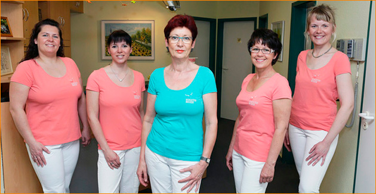

Zahnarztpraxis Schlüter-Becker
Hier sind Sie in guten Händen.
Herzlich Willkommen in unserer Zahnarztpraxis in Kamenz!
In unseren modernen Praxisräumen bieten wir Ihnen ein umfangreiches Spektrum zahnärztlicher Behandlungskonzepte auf einem anspruchsvollen Qualitätsniveau an. Ihr Lächeln ist unser Anliegen! Eine entspannte Atmosphäre und kurze Wartezeiten sorgen für einen angenehmen Aufenthalt. Wir nehmen uns Zeit für Sie und möchten Sie auf dem Weg zu einem lebenslangen Lächeln begleiten.
Dipl.-Med. Sigrid Schlüter-Becker
| Öffnungszeiten | |
|---|---|
| Montag | 8.00 - 12.00 & 14.00 - 18.00 |
| Dienstag | 9.00 - 12.00 & 14.00 - 19.00 |
| Mittwoch | 7.30 - 12.00 |
| Donnerstag | 9.00 - 12.00 & 14.00 - 18.00 |
| Freitag | 7.30 - 12.00 |
Telefon: 03578 - 304116
